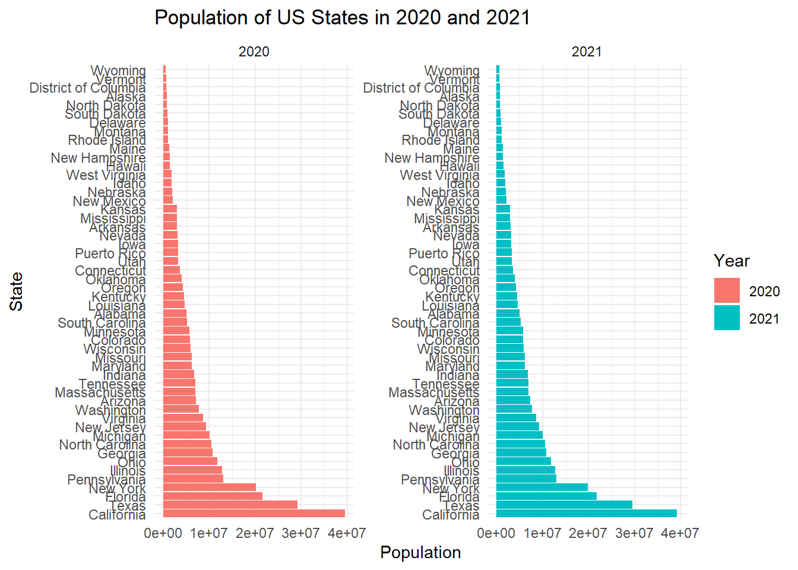
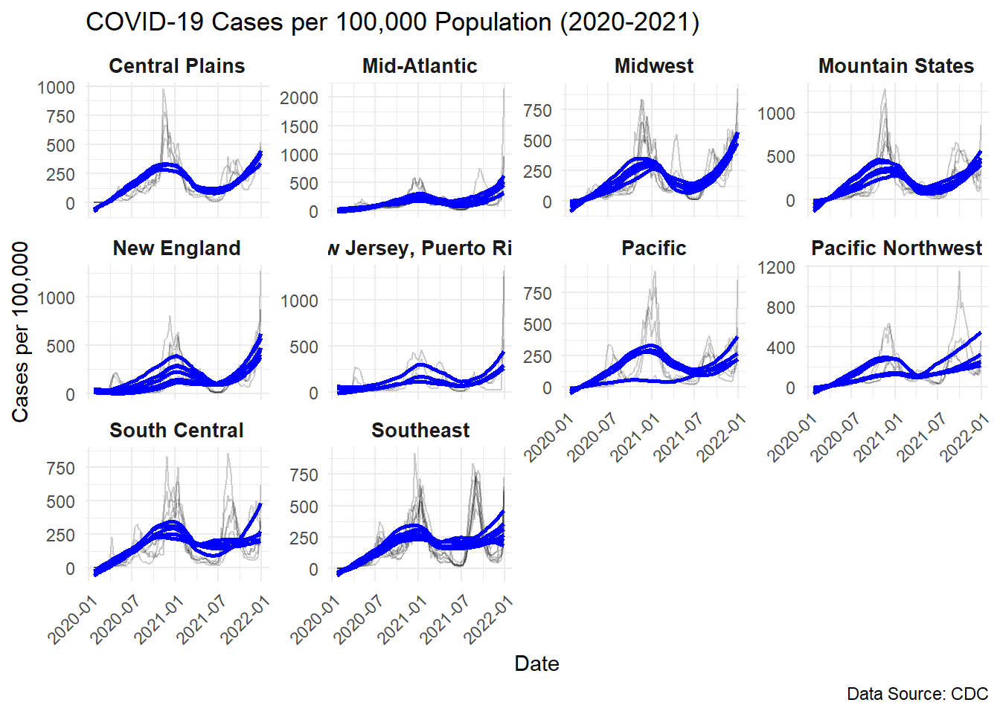

# Load the file where the API Key is stored
source("census-key.R") Problem set 3
Max points: 12.
In the next problem set, we plan to explore the relationship between COVID-19 death rates and vaccination rates across US states by visually examining their correlation. This analysis will involve gathering COVID-19 related data from the CDC’s API and then extensively processing it to merge the various datasets. Since the population sizes of states vary significantly, we will focus on comparing rates rather than absolute numbers. To facilitate this, we will also source population data from the US Census to accurately calculate these rates.
In this problem set we will learn how to extract and wrangle data from the data US Census and CDC APIs.
All answers should be submitted in pset-03-wrangling.qmd. Be sure to include a rendered version of your file and a raw code file that successfully would render on a new computer.
- (1 point) Get an API key from the US Census at https://api.census.gov/data/key_signup.html. You can’t share this public key. But your code has to run on a TFs computer. Assume the TF will have a file in their working directory (i.e. in the
BIOSTAT620_pset_sol/p3/directory, assuming that you placepset-03-wrangling.qmdin theBIOSTAT620_pset_sol/p3/folder) namedcensus-key.Rwith the following one line of code:
census_key <- "A_CENSUS_KEY_THAT_WORKS"Write a first line of code for your problem set that defines census_key by running the code in the file census-key.R.
- (1 point) The US Census API User Guide provides details on how to leverage this valuable resource. We are interested in vintage population estimates for years 2021 and 2022. From the documentation we find that the endpoint is:
# 2. Construct GET request using httr2
url <- "https://api.census.gov/data/2021/pep/population"Use the httr2 package to construct the following GET request.
https://api.census.gov/data/2021/pep/population?get=POP_2020,POP_2021,NAME&for=state:*&key=YOURKEYHERECreate an object called request of class httr2_request with this URL as an endpoint. Print out request to check that the URL matches what we want.
# 2. Construct GET request using httr2
# Define the API URL
url <- "https://api.census.gov/data/2021/pep/population"
library(httr2)
# Make the API request
request <- request(url) %>%
req_url_query(get = "POP_2020,POP_2021,NAME", `for` = "state:*", key = census_key)
# Perform the request and check the response
response <- request %>% req_perform()
# Check the status code
status_code <- resp_status(response)
print(paste("Status Code:", status_code))[1] "Status Code: 200"# Print the response content
content <- response %>% resp_body_string()
print(content)[1] "[[\"POP_2020\",\"POP_2021\",\"NAME\",\"state\"],\n[\"3962031\",\"3986639\",\"Oklahoma\",\"40\"],\n[\"1961455\",\"1963692\",\"Nebraska\",\"31\"],\n[\"1451911\",\"1441553\",\"Hawaii\",\"15\"],\n[\"887099\",\"895376\",\"South Dakota\",\"46\"],\n[\"6920119\",\"6975218\",\"Tennessee\",\"47\"],\n[\"3114071\",\"3143991\",\"Nevada\",\"32\"],\n[\"2117566\",\"2115877\",\"New Mexico\",\"35\"],\n[\"3188669\",\"3193079\",\"Iowa\",\"19\"],\n[\"2935880\",\"2934582\",\"Kansas\",\"20\"],\n[\"690093\",\"670050\",\"District of Columbia\",\"11\"],\n[\"29217653\",\"29527941\",\"Texas\",\"48\"],\n[\"6154481\",\"6168187\",\"Missouri\",\"29\"],\n[\"3012232\",\"3025891\",\"Arkansas\",\"05\"],\n[\"10067664\",\"10050811\",\"Michigan\",\"26\"],\n[\"1377848\",\"1388992\",\"New Hampshire\",\"33\"],\n[\"10457177\",\"10551162\",\"North Carolina\",\"37\"],\n[\"11790587\",\"11780017\",\"Ohio\",\"39\"],\n[\"5130729\",\"5190705\",\"South Carolina\",\"45\"],\n[\"577267\",\"578803\",\"Wyoming\",\"56\"],\n[\"39499738\",\"39237836\",\"California\",\"06\"],\n[\"778962\",\"774948\",\"North Dakota\",\"38\"],\n[\"4651203\",\"4624047\",\"Louisiana\",\"22\"],\n[\"6172679\",\"6165129\",\"Maryland\",\"24\"],\n[\"991886\",\"1003384\",\"Delaware\",\"10\"],\n[\"12989625\",\"12964056\",\"Pennsylvania\",\"42\"],\n[\"10725800\",\"10799566\",\"Georgia\",\"13\"],\n[\"4241544\",\"4246155\",\"Oregon\",\"41\"],\n[\"5707165\",\"5707390\",\"Minnesota\",\"27\"],\n[\"5784308\",\"5812069\",\"Colorado\",\"08\"],\n[\"9279743\",\"9267130\",\"New Jersey\",\"34\"],\n[\"4503958\",\"4509394\",\"Kentucky\",\"21\"],\n[\"7718785\",\"7738692\",\"Washington\",\"53\"],\n[\"1362280\",\"1372247\",\"Maine\",\"23\"],\n[\"642495\",\"645570\",\"Vermont\",\"50\"],\n[\"1847772\",\"1900923\",\"Idaho\",\"16\"],\n[\"6785644\",\"6805985\",\"Indiana\",\"18\"],\n[\"1086193\",\"1104271\",\"Montana\",\"30\"],\n[\"20154933\",\"19835913\",\"New York\",\"36\"],\n[\"3281538\",\"3263584\",\"Puerto Rico\",\"72\"],\n[\"3600260\",\"3605597\",\"Connecticut\",\"09\"],\n[\"21569932\",\"21781128\",\"Florida\",\"12\"],\n[\"8632044\",\"8642274\",\"Virginia\",\"51\"],\n[\"7022220\",\"6984723\",\"Massachusetts\",\"25\"],\n[\"12785245\",\"12671469\",\"Illinois\",\"17\"],\n[\"2956870\",\"2949965\",\"Mississippi\",\"28\"],\n[\"7177986\",\"7276316\",\"Arizona\",\"04\"],\n[\"3281684\",\"3337975\",\"Utah\",\"49\"],\n[\"5892323\",\"5895908\",\"Wisconsin\",\"55\"],\n[\"5024803\",\"5039877\",\"Alabama\",\"01\"],\n[\"1789798\",\"1782959\",\"West Virginia\",\"54\"],\n[\"1096229\",\"1095610\",\"Rhode Island\",\"44\"],\n[\"732441\",\"732673\",\"Alaska\",\"02\"]]"- (1 point) Make a request to the US Census API using the
requestobject. Save the response to and object namedresponse, and print it out here. Check the response status of your request and make sure it was successful. You can learn about status codes here.
response <- request %>% req_perform()
status_code <- resp_status(response)
print(paste("Status Code:", status_code))[1] "Status Code: 200"- (1 point) Use a function from the httr2 package to determine the content type of your response (print it out).
content_type <- resp_content_type(response)
print(paste("Content Type:", content_type))[1] "Content Type: application/json"- (1 point) Use just one line of code and one function to extract the data into a matrix. Print out the first few rows of the matrix (title:
population). Hints: 1) Use theresp_body_jsonfunction. 2) The first row of the matrix will be the variable names and this OK as we will fix in the next exercise.
population_list <- response %>%
resp_body_json()
population_df <- as.data.frame(do.call(rbind, population_list))
head(population_df) V1 V2 V3 V4
1 POP_2020 POP_2021 NAME state
2 3962031 3986639 Oklahoma 40
3 1961455 1963692 Nebraska 31
4 1451911 1441553 Hawaii 15
5 887099 895376 South Dakota 46
6 6920119 6975218 Tennessee 47- (1 point) Examine the
populationmatrix you just created. Notice that 1) it is not tidy, 2) the column types are not what we want, and 3) the first row is a header. Convertpopulationto a tidy dataset. Remove the state ID column and change the name of the column with state names tostate_name. Add a column with state abbreviations calledstate. Make sure you assign the abbreviations for DC and PR correctly. Hint: Use the janitor package to make the first row the header. Print out the first few rows of your cleaned dataset.
library(tidyverse)── Attaching core tidyverse packages ──────────────────────── tidyverse 2.0.0 ──
✔ dplyr 1.1.4 ✔ readr 2.1.5
✔ forcats 1.0.0 ✔ stringr 1.5.1
✔ ggplot2 3.5.1 ✔ tibble 3.2.1
✔ lubridate 1.9.3 ✔ tidyr 1.3.1
✔ purrr 1.0.2
── Conflicts ────────────────────────────────────────── tidyverse_conflicts() ──
✖ dplyr::filter() masks stats::filter()
✖ dplyr::lag() masks stats::lag()
ℹ Use the conflicted package (<http://conflicted.r-lib.org/>) to force all conflicts to become errorslibrary(janitor)
Attaching package: 'janitor'
The following objects are masked from 'package:stats':
chisq.test, fisher.testpopulation_clean <- population_df %>%
as_tibble() %>%
row_to_names(row_number = 1)
# remove state column
population_clean <- population_clean %>%
select(-state)
# rename NAME column to state_name
population_clean <- population_clean %>%
rename(state_name = NAME)
# parse all relevant colunns to numeric
population_clean <- population_clean %>%
mutate(
POP_2020 = as.numeric(POP_2020),
POP_2021 = as.numeric(POP_2021)
)
# add state abbreviations using state.abb variable mapped from the state.name variable
population_clean <- population_clean %>%
mutate(
state_abbr = state.abb[match(state_name, state.name)],
state_abbr = case_when(
state_name == "District of Columbia" ~ "DC",
state_name == "Puerto Rico" ~ "PR",
TRUE ~ state_abbr
)
)
population_clean <- population_clean %>%
mutate(state_name = sapply(state_name, as.character))
head(population_clean)# A tibble: 6 × 4
POP_2020 POP_2021 state_name state_abbr
<dbl> <dbl> <chr> <chr>
1 3962031 3986639 Oklahoma OK
2 1961455 1963692 Nebraska NE
3 1451911 1441553 Hawaii HI
4 887099 895376 South Dakota SD
5 6920119 6975218 Tennessee TN
6 3114071 3143991 Nevada NV - (1 point) As a check, make a barplot of states’ 2021 and 2022 populations. Show the state names in the y-axis ordered by descending population size. Hint: You will need to use
facet_wrap.
population_long <- population_clean %>%
pivot_longer(cols = c(POP_2020, POP_2021),
names_to = "Year",
values_to = "Population") %>%
mutate(Year = gsub("POP_", "", Year)) %>%
arrange(desc(Population))
ggplot(population_long, aes(x = reorder(state_name, -Population), y = Population, fill = Year)) +
geom_col(position = "dodge") +
coord_flip() +
facet_wrap(~Year, scales = "free_y") +
labs(title = "Population of US States in 2020 and 2021",
x = "State",
y = "Population") +
theme_minimal()
head(population_long, 10)# A tibble: 10 × 4
state_name state_abbr Year Population
<chr> <chr> <chr> <dbl>
1 California CA 2020 39499738
2 California CA 2021 39237836
3 Texas TX 2021 29527941
4 Texas TX 2020 29217653
5 Florida FL 2021 21781128
6 Florida FL 2020 21569932
7 New York NY 2020 20154933
8 New York NY 2021 19835913
9 Pennsylvania PA 2020 12989625
10 Pennsylvania PA 2021 12964056- (1 point) The following URL:
url <- "https://github.com/datasciencelabs/2024/raw/refs/heads/main/data/regions.json"points to a JSON file that lists the states in the 10 Public Health Service (PHS) defined by CDC. We want to add these regions to the population dataset. To facilitate this create a data frame called regions that has two columns state_name, region, region_name. One of the regions has a long name. Change it to something shorter. Print the first few rows of regions. Make sure that the region is a factor.
library(jsonlite)
Attaching package: 'jsonlite'The following object is masked from 'package:purrr':
flattenlibrary(purrr)
library(tidyverse)
url_regions <- "https://github.com/datasciencelabs/2024/raw/refs/heads/main/data/regions.json"
regions_data <- fromJSON(url_regions)
head(regions_data) region region_name
1 1 New England
2 2 New York and New Jersey, Puerto Rico, Virgin Islands
3 3 Mid-Atlantic
4 4 Southeast
5 5 Midwest
6 6 South Central
states
1 Connecticut, Maine, Massachusetts, New Hampshire, Rhode Island, Vermont
2 New Jersey, New York, Puerto Rico, Virgin Islands
3 Delaware, District of Columbia, Maryland, Pennsylvania, Virginia, West Virginia
4 Alabama, Florida, Georgia, Kentucky, Mississippi, North Carolina, South Carolina, Tennessee
5 Illinois, Indiana, Michigan, Minnesota, Ohio, Wisconsin
6 Arkansas, Louisiana, New Mexico, Oklahoma, Texasregions_clean <- regions_data %>%
unnest(cols = c(states)) %>%
rename(state_name = states)
head(regions_clean)# A tibble: 6 × 3
region region_name state_name
<list> <chr> <chr>
1 <int [1]> New England Connecticut
2 <int [1]> New England Maine
3 <int [1]> New England Massachusetts
4 <int [1]> New England New Hampshire
5 <int [1]> New England Rhode Island
6 <int [1]> New England Vermont regions_clean <- regions_clean %>%
mutate(region_name = case_when(
region_name == "East South Central" ~ "ESC",
TRUE ~ region_name
))
regions_clean <- regions_clean %>%
mutate(region_name = as.factor(region_name))
head(regions_clean)# A tibble: 6 × 3
region region_name state_name
<list> <fct> <chr>
1 <int [1]> New England Connecticut
2 <int [1]> New England Maine
3 <int [1]> New England Massachusetts
4 <int [1]> New England New Hampshire
5 <int [1]> New England Rhode Island
6 <int [1]> New England Vermont - (1 point) Add a region and region name columns to the
populationdata frame using the joining methods we have learned. Print out the first few rows.
population_with_region <- population_clean %>%
left_join(regions_clean, by = "state_name")
# Convert region columns to integer types
population_with_region <- population_with_region %>%
mutate(region = as.integer(unlist(region)))
head(population_with_region)# A tibble: 6 × 6
POP_2020 POP_2021 state_name state_abbr region region_name
<dbl> <dbl> <chr> <chr> <int> <fct>
1 3962031 3986639 Oklahoma OK 6 South Central
2 1961455 1963692 Nebraska NE 7 Central Plains
3 1451911 1441553 Hawaii HI 9 Pacific
4 887099 895376 South Dakota SD 8 Mountain States
5 6920119 6975218 Tennessee TN 4 Southeast
6 3114071 3143991 Nevada NV 9 Pacific - (1 point) From reading https://data.cdc.gov/ we learn the endpoint
https://data.cdc.gov/resource/pwn4-m3yp.jsonprovides state level data from SARS-COV2 cases. Use the httr2 tools you have learned to download this into a data frame. Is all the data there? If not, comment on why.
# Load required library
library(httr2)
library(jsonlite)
library(dplyr)
# Define API endpoint
api <- "https://data.cdc.gov/resource/pwn4-m3yp.json"
# Send GET request and retrieve response
cases_raw <- request(api) |>
req_perform() |>
resp_body_json(simplifyVector = TRUE) |>
as_tibble()
# Print first few rows to check data
head(cases_raw)# A tibble: 6 × 10
date_updated state start_date end_date tot_cases new_cases tot_deaths
<chr> <chr> <chr> <chr> <chr> <chr> <chr>
1 2023-02-23T00:00:00.… AZ 2023-02-1… 2023-02… 2434631.0 3716.0 33042.0
2 2022-12-22T00:00:00.… LA 2022-12-1… 2022-12… 1507707.0 4041.0 18345.0
3 2023-02-23T00:00:00.… GA 2023-02-1… 2023-02… 3061141.0 5298.0 42324.0
4 2023-03-30T00:00:00.… LA 2023-03-2… 2023-03… 1588259.0 2203.0 18858.0
5 2023-02-02T00:00:00.… LA 2023-01-2… 2023-02… 1548508.0 5725.0 18572.0
6 2023-03-23T00:00:00.… LA 2023-03-1… 2023-03… 1580709.0 1961.0 18835.0
# ℹ 3 more variables: new_deaths <chr>, new_historic_cases <chr>,
# new_historic_deaths <chr>- (1 point) The reason you see exactly 1,000 rows is because CDC has a default limit. You can change this limit by adding
$limit=10000000000to the request. Rewrite the previous request to ensure that you receive all the data. Then wrangle the resulting data frame to produce a data frame with columnsstate,date(should be the end date) andcases. Make sure the cases are numeric and the dates are inDateISO-8601 format. Print out the first several rows.
# Load required libraries
library(httr2)
library(jsonlite)
library(dplyr)
library(lubridate)
# Define API endpoint with an increased limit
api <- "https://data.cdc.gov/resource/pwn4-m3yp.json?$limit=10000000000"
# Send GET request and retrieve response
cases_raw <- request(api) |>
req_perform() |>
resp_body_json(simplifyVector = TRUE) |>
as_tibble()
# Print column names to confirm available data
print(colnames(cases_raw)) [1] "date_updated" "state" "start_date"
[4] "end_date" "tot_cases" "new_cases"
[7] "tot_deaths" "new_deaths" "new_historic_cases"
[10] "new_historic_deaths"# Ensure correct column names
cases_cleaned <- cases_raw |>
select(state, end_date, new_cases) |> # Use `new_cases` instead of `new_case`
rename(date = end_date, cases = new_cases) |>
mutate(
cases = as.numeric(cases), # Convert cases to numeric
date = as.Date(date) # Convert date to Date format (ISO-8601)
)
# Print first few rows to verify
head(cases_cleaned)# A tibble: 6 × 3
state date cases
<chr> <date> <dbl>
1 AZ 2023-02-22 3716
2 LA 2022-12-21 4041
3 GA 2023-02-22 5298
4 LA 2023-03-29 2203
5 LA 2023-02-01 5725
6 LA 2023-03-22 1961- (1 point) For 2020 and 2021, make a time series plot of cases per 100,000 versus time for each state. Stratify the plot by region name and make a separate line plot for each state. Don’t use colors for this plot, but set
alpha = 0.2to make the plots more easily visable. Make sure to label your graph appropriately.
library(ggplot2)
library(dplyr)
cases_normalized <- cases_cleaned %>%
left_join(population_with_region, by = c("state" = "state_abbr")) %>%
mutate(
cases_per_100k = (cases / POP_2021) * 100000
)
cases_filtered <- cases_normalized %>%
filter(!is.na(cases_per_100k)) %>%
filter(format(date, "%Y") %in% c("2020", "2021"))
ggplot(cases_filtered, aes(x = date, y = cases_per_100k, group = state)) +
geom_line(alpha = 0.2) +
facet_wrap(~ region_name, scales = "free_y") +
labs(
title = "COVID-19 Cases per 100,000 Population (2020-2021)",
x = "Date",
y = "Cases per 100,000",
caption = "Data Source: CDC"
) +
theme_minimal() +
theme(
strip.text = element_text(size = 10, face = "bold"),
axis.text.x = element_text(angle = 45, hjust = 1)
) +
geom_smooth(se = FALSE, color = "blue", alpha = 0.3) `geom_smooth()` using method = 'loess' and formula = 'y ~ x'